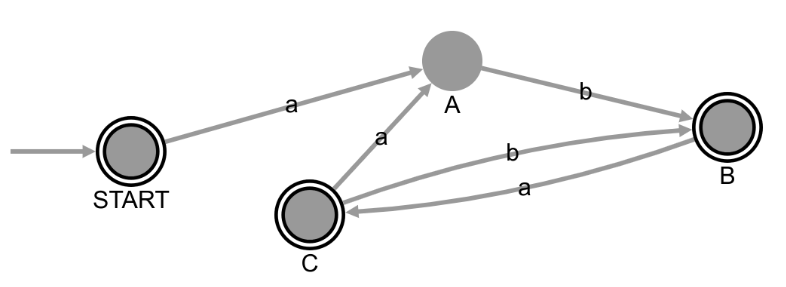
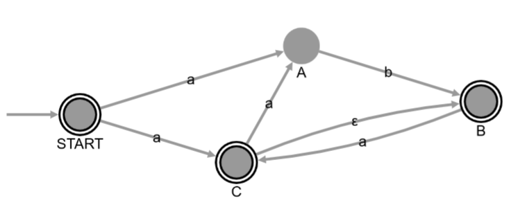
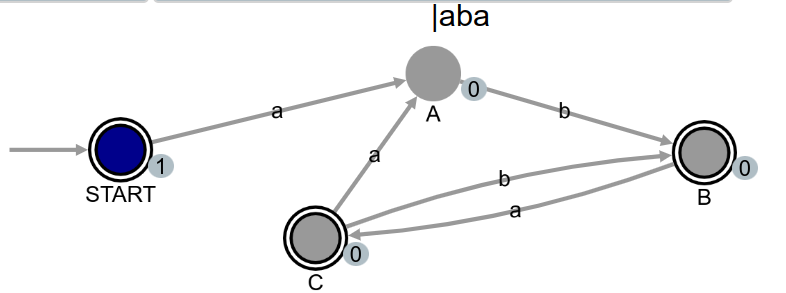
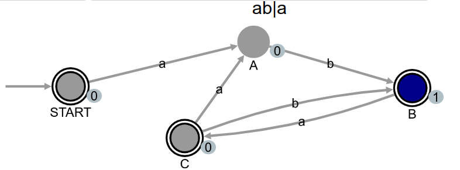
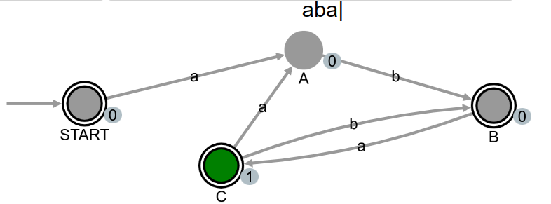

Um autómato finito é um modelo de computação que pode ser utilizado para especificar uma linguagem. Uma linguagem é um conjunto de palavras sobre um alfabeto.
O poder expressivo dos autómatos finitos é relativamente fraco, sendo apenas é capaz de descrever linguagens com uma estrutura muito regular, concretamente as linguagens descritas pelas gramáticas Tipo-3 de Chomsky, conhecidas como linguagens regulares.
A especificação duma linguagem é realizada através de reconhecimento. Para testar se uma palavra pertence à linguagem, aplica-se o autómato à palavra e o autómato decide se a palavra é aceite ou rejeitada.
Um autómato é constituido por estados e por transições etiquetadas entre estados, não possuindo memória. Um dos estados é inicial, e alguns estados são finais. Para tentar reconhecer uma palavra, começamos a navegar a partir do estado inicial e vamos consumindo os símbolos da palavra sequencialmente, enquanto se seguem as transições etiquetadas disponíveis, com base no símbolo de entrada. A palavra é aceite sse for alcançada uma situação em que a palavra foi totalmente consumida e o estado corrente é final.
Num autómato determinista, o conjunto das transições associa a cada par (estado, símbolo) um único estado no máximo. Ou seja, a relação de transição é uma função. Eis um exemplo dum autómato determinista:

Exemplos de palavras reconhecidas: '', 'ab', 'aba', 'abab', 'abaab', 'ababa', 'abaaba', 'ababab'.
Num autómato não determinista permite-se que dum estado saiam várias transições com o mesmo símbolo; e também se permitem transições etiquetadas com ε, que são usadas sem consomir qualquer símbolo da palavra. Neste caso a relação de transição não é uma função. Eis um exemplo dum autómato não determinista, apresentado sob a forma de grafo:

Exemplos de palavras reconhecidas: '', 'aa', 'ab', 'aaa', 'aab', 'aba', 'aaaa', 'aaab', 'abaa'.
Mais informação na documentação da disciplina.
Se o autómato não for determinista, é preciso convertê-lo primeiro num autómato determinista, usando o comando apropriado.
Um estado é produtivo se contribuir de alguma forma para o reconhecimento de alguma palavra.
Um estado é acessível se, a partir do estado inicial, existir um percurso no grafo que o permitam alcançar.
Um estado é útil se for ao mesmo tempo produtivo e acessível.
  Estados produtivos
Pinta de cor de laranja os estados produtivos dum autómato.
Estados acessíveis
Pinta de amarelo todos os estados acessíveis dum autómato.
Estados úteis
Pinta de lilás todos os estados acessíveis dum autómato.
Limpar cores
Limpa as cores dos estados, que estejam presentes em virtude do comando anterior.
Mostrar tabela
Mostra o autómato sob a forma de tabela.
Animação
HELP
HELP minimize